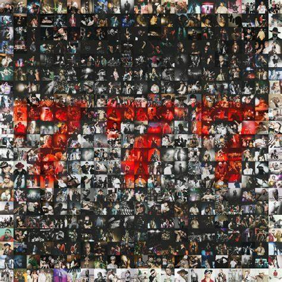
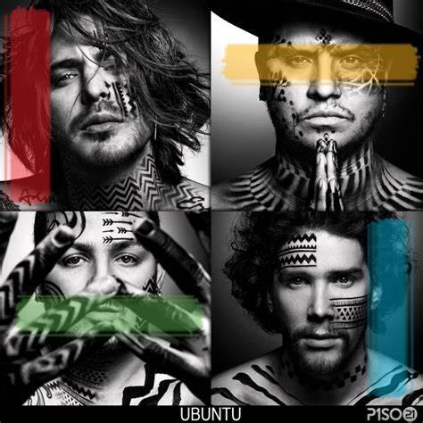

Piso 21 es una banda colombiana de pop, formada en Medellín, Colombia, en 2007 por David Escobar (Dim), Juan David Huertas (El Profe), Juan David Castaño (El Llanero), y Pablo Mejía (Pablito); varios años después, con la salida de Castaño, se incorporó David Hernández (Lorduy). En 2011 Piso 21 aparece en la escena musical con el estreno de una serie canciones con un toque romántico; pero es al año siguiente cuando realizan el lanzamiento oficial de su álbum debut, con el mismo título de la agrupación. Piso 21 logra mayor reconocimiento cuando colaboraron con Maluma en el remix del sencillo "Me llamas".
LLos inicios de Piso 21 se dan en Bogotá, Colombia, cuando Juan David Huertas decidió pasar una temporada en la ciudad y tuvo la oportunidad de convertirse en buen amigo de Juan David Castaño al compartir mucho más tiempo con él. Lo que no sabía ninguno de los dos era la gran pasión que sentían por la música. Al enterarse de la trayectoria musical que tenían desde pequeños, decidieron comenzar a tocar en compañía de otros dos amigos, conocidos en el colegio. Los integrantes de Piso 21 iniciaron su carrera musical empíricamente pues no contaban con apoyo ni asesoría de expertos en la materia; de modo que arrancaron sin pretensiones de conformarse como conjunto o banda pues lo que pretendían al ensayar era solo pasar un buen rato. Así, comenzaron a realizar toques en diferentes ciudades de Colombia, donde fueron bien aceptados por el público de los diferentes sitios que visitaban. Fue gracias a esa receptividad que decidieron constituir una banda porque la gran acogida de tantas personas era un buen estímulo para optar por la música.
LEl nombre artístico es un paralelismo, por la altura, del sitio donde los integrantes se reunían a componer sus primeras canciones: una azotea de un edificio en Medellín, ubicada en el piso 21.
Nació en Medellín el 22 de abril de 1988, estudió Comunicación Social, es vocalista del grupo y, además, toca guitarra rítmica. Los inicios musicales de Dim fueron en el Colegio de Música de su ciudad natal, donde participó en el coro y tomó clases de percusión y batería. Posteriormente ganó cuatro festivales de la canción en el colegio San Ignacio, en la categoría solista, por su destacada afinación y el buen desempeño en el canto. Durante la secundaria se alejó de la música; pero en el año décimo, durante una hospitalización, se dedicó a aprender guitarra y esto lo motivó a componer sus primeras canciones y a expresar con melodías todas sus vivencias. En 2006 Dim conoce a Pablo Mejía, mejor conocido como Pablito, quien comparte el gusto por la composición y el canto; un año después ambos crearon un repertorio de más de diez canciones. Luego conoce a Juan David Huertas (El Profe) y a Juan David Castaño (El Llanero), con quienes decide empezar a tocar sus canciones y a componer temas nuevos. Junto a ellos ha logrado posicionar un nombre en el medio artístico, no solo de su país, sino en Latinoamérica y Estados Unidos.
Juan David Huertas, El Profe, como se le llama cariñosamente, nació en Bogotá el 23 de Junio de 1984. Estudió música, interpreta la guitarra y canta en coros. Hijo de Martín Huertas y Yolanda Clavijo, es el mayor de tres hermanos. Desde temprana edad Juan David demostró sus dotes musicales al aprender a tocar batería y bajo en la iglesia a la que asistía. Durante su adolescencia el “El Profe” participó en todos los eventos culturales de su colegio y fue ahí donde encontró, para el resto de su vida, su verdadera vocación. Juan David comenzó sus estudios musicales en la academia CUR del Colegio Americano de Bogotá, donde aprendió a tocar la guitarra; tiene, además, gran interés por los instrumentos de cuerda, como el tiple y el cuatro. Posteriormente continúo estudios de música en la Universidad Central de Bogotá, en la Universidad de Antioquia en Medellín y en el Instituto de Tecnológica de Artes Débora Arango.
Pablo Mejía, conocido como Pablito, nació en Medellín el 6 de diciembre de 1988, estudió ingeniería de producción y es vocalista en el grupo. Pablito empezó su iniciación musical a los dos años de edad en el colegio de música de Laureles; luego mostró inclinación por la batería y descubrió así su pasión por los ritmos urbanos. Desde niño Pablo también compartió su gran pasión escribiendo canciones. Debido a su desenvolvimiento artístico Pablo conoce a David Escobar (DIM), posteriormente a Juan David Castaño (Llanero) y a Juan David Huertas (Profe), al iniciarse en “Piso 21”; allí empieza a formarse como profesional, con una carrera en alza y con gran proyección.
Juan David Castaño, El Llanero, nace en Medellín el 20 de enero de 1990. Hijo de Análida Montoya Palacio y de Juan David Castaño Arango, es el menor de dos hermanos. Los inicios musicales de “El Llanero” surgen cuando estaba en el colegio e imitaba las coreografías de artistas como Michael Jackson; con lo cual se granjeaba la admiración de amigos y familiares. A los 10 años de edad Juan David conoció la música de los llanos colombianos, gracias al amor de su padre por esta manifestación cultural, y quien fundó un restaurante –luego muy reconocido- que llevó lo mejor del Llano a Medellín; allí aprendió Juan David a tocar las maracas y a interpretar las más conocidas canciones llaneras. Al finalizar la educación media el joven comenzó estudios de Comunicación Audiovisual; fue durante esa época cuando conoció a David Escobar, a Pablo Mejía y a Juan David Huertas, con quienes haría realidad el sueño musical de Piso 21. El 3 de febrero de 2019 Piso 21, y El Llanero, informan a través de redes sociales que este último hará su carrera en solitario; del mismo modo dan a conocer que un nuevo integrante, llamado Lorduy, se suma al grupo.
|  | La banda colombiana realizó el lanzamiento oficial de su álbum “777” en todas las plataformas digitales y que incluye algunos temas que ya habían adelantado, como “Mató Mi Corazón”, “Salvavidas” (al lado de Ñejo), “Los Cachos” (junto a Manuel Turizo) y el más recientemente sencillo, “Que Triste”, que realizaron en colaboración con Carin León, además de otros 12 temas en los que dejaron el corazón. Junto al lanzamiento de su cuarto álbum de estudio, Piso 21, estrenó en simultáneo el video musical de “Felices Perdidos”, tema que contó con la colaboración de su gran amigo Danny Ocean, y que a pocas horas de ser lanzado en Youtube, ya completa más 880.000 reproducciones, prometiendo que pronto hará parte del listado de las principales tendencias de la plataforma de video. |
|  | Ubuntu es el segundo álbum de estudio del grupo musical de urban pop colombiano Piso 21. El álbum se caracteriza por la consolidación del grupo en base a su nuevo estilo urbano, aunque conservando su esencia romántica como lo fue en su primer álbum. Hay una fusión con otros ritmos como el trap y el uso de música africana, folclórica y urbana como variedad. De este álbum, se desprenden ocho sencillos con videoclips: «Me llamas», «Besándote», «Déjala que vuelva», «Te cogieron de parche», «Se tapó el baño», «Te amo», «La vaca gomela», y «Huele a coliflor». En este álbum, están incluidas las participaciones de Manuel Turizo, Paulo Londra, Maikel Delacalle, Fonseca, Zion & Lennox y Xantos. |
| El amor en los tiempos del perreo es el tercer álbum de estudio del grupo musical de reguetón colombiano Piso 21. El álbum se caracteriza por el estilo urbano de la banda, aunque tiene una variedad de ritmos entre ranchera, pop, trap y otros. Además, se destaca por ser el primer álbum en que Lorduy participa, ya que es quién reemplazó a Llane dentro de la banda. De este álbum, se desprenden sencillos como: «Una vida para recordar», «Más de la una», «Mami» y «Pa' olvidarme de ella». En este álbum, están incluidas las participaciones de Maluma, Black Eyed Peas, Zion & Lennox, Myke Towers y Christian Nodal entre otros.. |